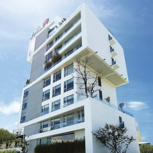
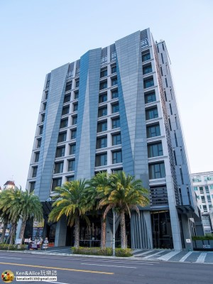
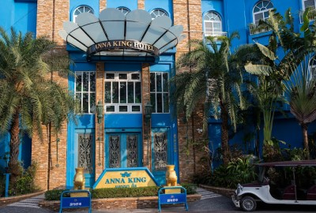

| 桃城茶樣子｜南院旅墅｜安娜國王酒店 | |
桃城茶樣子 |
|
|  | 在深耕與經營 傳統與創新 人文與建築 歷史與文化 我把種子種下 在茶的故鄉，孕育以茶為主題的旅店 地址：嘉義市忠孝路516號 資料來源：承億文旅網站 |
| 南院旅墅 | |
「南院旅墅」師法豐饒恩典的阿里山大砌原境。以優雅身段坐覽嘉義精華區段，鐵灰色澤自然基底石材、L 型建築基座伸向天際，輝映「高山長青 澗水常藍」建築語彙成就城市美學經典，以「觀享風景」感知精神成就內部設計的趣味，以 CORNER 手法鋪陳柳暗花明的旅墅空間意涵，將建築定位為嘉義新城市座標。 「南院旅墅」大廳接待以「山峯」為視覺主軸，鋪陳氣勢隱喻搭配櫃台石材牆面隱喻的山林；結合線燈設計的大柱，則以雨點呈現自然的繽紛錯落；天花板則以立體、轉折、層板的手法鋪陳形塑過渡與寧靜的氛圍，在整體視覺上，以尺度界定視覺上的安定與優雅，透露出尊榮溫馨的飯店接待風格。 地址： 嘉義市東區公明路65號 |
 |
| 安娜國王酒店 | |
|  | 坐落於嘉義最古老的市場旁，這裏融合泰國清邁風格與在地文化，為旅人帶來溫暖而別緻的體驗。這裡，你可以感受到這座城市的寧靜與歲月的厚度，也能與最純粹的人情相遇。 「1+1 漫遊嘉義」是我們為平日旅人準備的小驚喜：週日至週四入住，住一晚、下一晚由我們招待。不論你選擇續住同一間房，或是換一間房體驗看看，我們都會用豐富的早餐、陽光，還有更多的驚喜，等著你的到來。 地址：嘉義市東區和平路150號 |